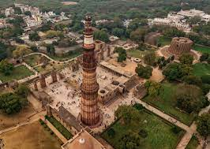
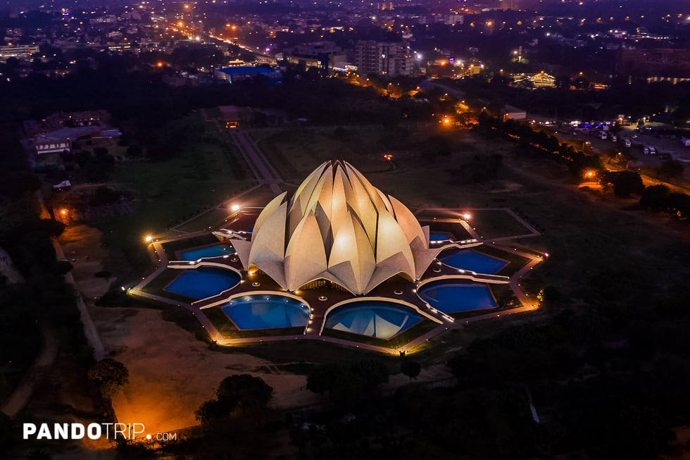
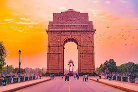
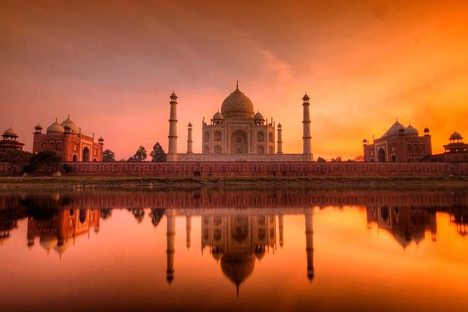
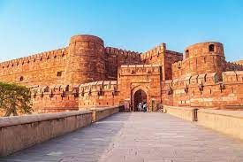
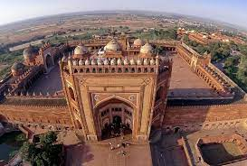
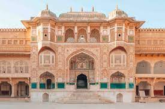
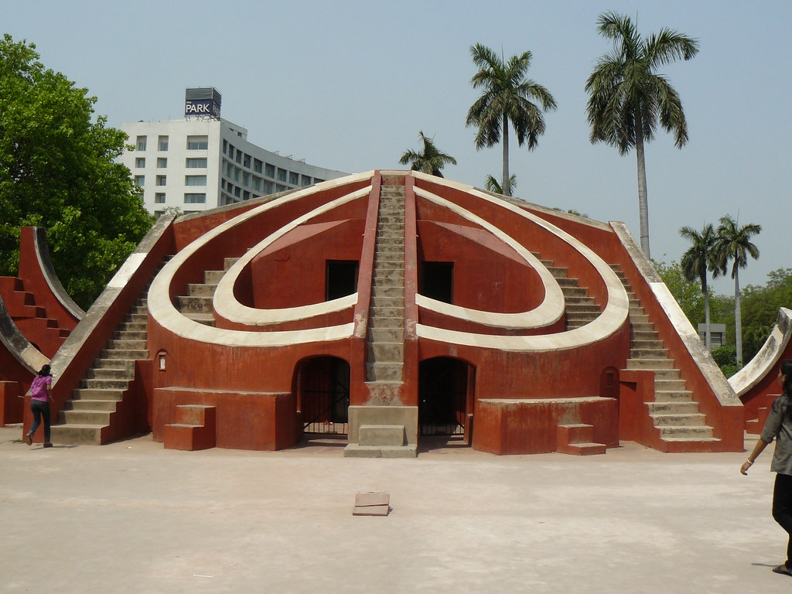
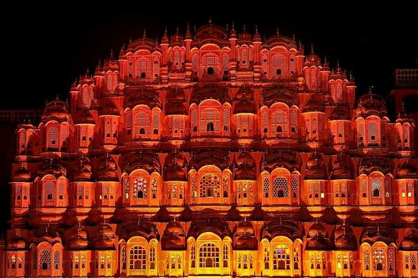

Agra:
A Wonder
of Wonders
- Delhi- Agra
- Qutb Minar
- Lotus Temple
- India Gate



- Agra - Fatehpur Sikri - Jaipur
- sun rise over the Taj Mahal
- Agra Fort
- Fatehpur Sikri



Jaipur Sightseeing
- Amber Fort
- Jal Mahal
- Jantar Mantar
- Hawa Mahal



